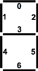

To save space, you can encode numbers into large containers, by shifting values into different sections of the container. Example: left-shift 0x1CED by sixteen (<< 16) to 0x1CED0000, leaving space for another 16-bit num. Combine these using |, like so: (0x1CED << 16) | 0xF00D == 0x1CEDF00D.
Sometimes bits in a number represent 32 independent ON/OFF states (such as the Yes/No votes of 32 people, or the current settings of 32 light switches in your house). This can be much more convenient than storing each of the 32 values individually, as long as we can manipulate each bit separately.
Thinking about our bitwise operators, every bit can be set by using a combination of | and <<. To set bits 17 and 18 but keep the rest of the variable untouched, we could val |= (0x3 << 17). Those bits might have previously been 0 or 1, but now they are 1 (because any value OR 1 becomes 1).
On the flip side, we may want to clear a certain bit. In that case, we take advantage of the fact that any value AND 0 becomes 0. If we don’t want to affect the rest of the variable when we clear that bit, then we must AND it with a very specific bit mask. This bit mask should have a value of all-ones, except for the one bit we want cleared. The ~ operator flips every bit value, making bit masks easy to create. To clear bit 12, but keep the rest of the variable untouched, we could val &= ~(1 << 12). The (1 << 12) creates a positive mask so to speak, and the ~ turns it into a negative mask. Our variable might previously have had a 0 or a 1 at bit 12, but now it is 0.
Using what we’ve learned earlier, solve these bit-related challenges today:
Count Set Bits
Given integer, return how many bits are set to 1. For an input of 1023 (0x3FF), return 10. Given the value 8192 (0x2000), return 1.
Second: can you make it O(s), where s is the number of set bits?
Encode Bytes to 32
Given four values between 0-255, encode them into a 32-bit integer. First should map to most significant 8 bits. Given [0xF0, 0xC3, 0x96, 0x59], return 4039349849 (0xF0C39659).
Reverse Bits
Given a 32-bit unsigned integer, reverse its bits and return this value. If you are given the value 0b01100110011001101111000011110000, then your function should return the value 0b00001111000011110110011001100110.
Decode 32 to Bytes
Given 32-bit integer, return a set of values for the four bytes in the integer. Given 306542763 (which in hex is 0x124578AB), return [0x12, 0x45, 0x78, 0xAB].
Byte Array
With encode/decode you’ve written above, create a ByteArray data structure to store 8-bit values encoded into 32-bit ints to save space. Build set(index, value) and get(index).
Chapter 18 – Bit Arthmetic
Encode Bit Num
Given bit val, bit number, and 32-bit val, mask bit into 32-bit val and return new val. For (1,22,1) return 0x400001; for (0,3,0x18) return 0x10.
Bit Array
With encode/decode functions you’ve written above, create a BitArray class that stores 1-bit values encoded into 32-bit integers. Include methods set(index,val) and get(index).
Decode Bit Num
Given bit number and 32-bit value, return val of referenced bit number. For(30,0x4FFFFFFF), return 1. For (3,0x4FFFFFF7), return 0.
Radix Sort2
Implement RadixSort, based on powers of two instead of digit numerals 0-9. Sort by lowest significant bit, then next least significant bit, etc. What is the big-O runtime to sort 32-bit integers?
Sprinklers
The Rockefeller country estate is watered by a 28-head sprinkler system. Create a function to return a 28-bit number; a landscape microcontroller calls the function each minute to determine which heads to enable. Only one sprinkler can run at a time; each runs 20 minutes a day. Four global variables alter system behavior, in increasing priority: RAIN_SENS is a precipitation meter – if true, disable all heads. SENS_OVERRIDE, if true, disables the precipitation meter. While SYS_TEST is true, cycle through all 28 sprinklers for 1 minute each. Finally, if SYS_DISABLE is true, turn off all sprinklers.
 LED Encoding
Classic LEDs have seven segments that are individually turned on or off to produce the desired letter or numeral, arranged as in diagram at right. Each segment’s on/off state will be determined by a different bit in a container byte (bits numbered at right). Value 0x7B signifies that segments [0,1,3,4,5,6] would be enabled, which would display numeral ‘6’. Build function LED2Numeral(ledByte) that accepts a byte representing the states of LED segments in one base-10 numeral, returning the numerical value of that base-10 numeral (i.e. 0-9). Given the input 36 (0x24, segments 2 & 5), return 1.
Second: create function Int2LED(value) that accepts a 16-bit integer value and translates it into the values needed to produce the corresponding LED readout in base-10. The function should return an array of five bytes: each byte representing one of the numerals from least-significant to most-significant. Using our examples above, LEDBytes(85210) == [0,36,93,107,127].
Where’s the Bug? (bitwise operators version)
// How many bugs can you find?
function numSetBits(num) { // count num of set bits in a 64-bit val
while (num) { bitCount = bitCount + num && 0x1; num = num >> 1; }
return bitCount;
}